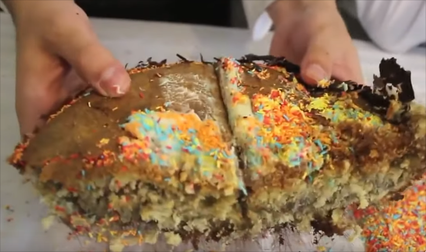

Cake made primarily with Idubbbz's hair
This masterpiece of a recipe was conceived in 11/13/2015.
Filthy Frank together with Maxmoefoe and Idubbbz, were able to create the first hair cake
in the world. This is an improved version of the original Vomit cake made earlier in that
same year.
- - 5 eggs
- - 5 cigarettes butt
- - 5 cups of self raising flour
- - 1 1/2 cup of vegetable oil
- - 2 cups of milk
- - 1 person with short-medium hair
- - 1 shot of vodka
- - 3 teaspoons of butter
- - 1 cup of sugar
- - 1 teaspoon of salt
- You will need to have someones hair into the mixer
- Once the hair is added, put the rest of the ingredients into the bow, and mix them.
- For more flavour, you can add the extra ingredients
- After you get a consistent texture, put the doe into the over for 60 minutes.
- Take the cake out of the oven, add some icing and confetti on top
- It is ready to be served!